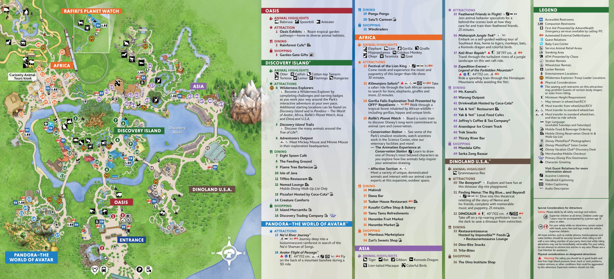

Orlando Trip · Day Planner · Animal Kingdom
Half animals, half theme park — safaris, walking trails, and two big headliners. Lots of shaded walking, so it's a good ECV day for the grandparents. Every attraction keyed to Disney's official map numbers. Waits are typical for a late-January low-crowd week.
Disney's official Animal Kingdom guide map. Tap or pinch to zoom the numbered legend — the numbers match the table below.

Official Disney guide map. Lands: The Oasis, Discovery Island, Pandora – The World of Avatar, Africa, Asia, and DinoLand U.S.A.
Rope-drop Pandora → 18 · 17 → Africa while animals are active → 23 · 24 → Asia → 38 · 37 · 36 → midday shows (A/C) → 22 · 51 → DinoLand for the kids → 50 · 52 → meet Mickey 6, then Tree of Life Awakenings at dusk.
The park's headliner (Pandora) — a 3D flying thrill. 44" min, so the 7-yr-old if tall enough. Rope-drop it or buy the Individual Lightning Lane.
Real animals across the savanna — ride it early when they're most active and it's cooler.
# = number on the map · Plan = suggested order (dashed = flexible). Priority stars = how must-do for your group. Fill your own order & notes in the last two columns.
| Attraction | Height | Wait | Length | Lightning Lane | Best time | Plan |
|---|---|---|---|---|---|---|
| The Oasis & Discovery Island | ||||||
| 1 Oasis Exhibits ★garden animal trail | Any | Walk-up | — | — | Entry / exit | flex |
| 4 Wilderness Explorers ★kids' badge activity | Any | Self-paced | — | — | Anytime | flex |
| 5 Discovery Island Trails ★★Tree of Life animals | Any | Walk-up | — | — | Midday | 13 |
| 6 Adventurers Outpost — Meet Mickey & Minnie ★★★CharacterA/C rest | Any | 15–25m | — | MP | Anytime | 9 |
| Pandora – The World of Avatar | ||||||
| 17 Na'vi River Journey ★★★Darkgentle, glowing — kids love it | Any | 30–50m | ~5m | MP | Rope-drop / eve | 2 |
| 18 Avatar Flight of Passage ★★★7+ / adultsThrillRider Switch | 44" / 112cm | 50–80m | ~5m | ILL$ | Rope-drop FIRST | 1 |
| Africa | ||||||
| 22 Festival of the Lion King ★★★A/C rest30-min show | Any | Showtimes | ~30m | MP | Midday | 6 |
| 23 Kilimanjaro Safaris ★★★real animals, bumpy | Any | 25–45m | ~22m | MP | Early (animals active) | 3 |
| 24 Gorilla Falls Exploration Trail ★★walking trail | Any | Walk-up | — | — | After safari | 5 |
| 25 Rafiki's Planet Watch ★★train + animal care, kids | Any | Walk-up | ~45m visit | — | Midday | 15 |
| Asia | ||||||
| 35 Feathered Friends in Flight ★★A/C restbird show | Any | Showtimes | ~25m | MP | Midday | 14 |
| 36 Maharajah Jungle Trek ★★tigers, walking trail | Any | Walk-up | — | — | Midday | 8 |
| 37 Kali River Rapids ★★7+WetRider Switch | 38" / 97cm | 25–45m | ~5m | MP | Warm midday | 7 |
| 38 Expedition Everest ★★7+ThrillDarkRider Switch | 44" / 112cm | 25–45m | ~3m | MP | Early / evening | 4 |
| DinoLand U.S.A. | ||||||
| 50 The Boneyard ★★dinosaur dig playground | Any | Walk-up | — | — | Kids' energy burn | 11 |
| 51 Finding Nemo: The Big Blue... and Beyond! ★★★A/C rest25-min show | Any | Showtimes | ~25m | MP | Midday | 10 |
| 52 DINOSAUR ★★DarkThrillRider Switchloud, may scare the 5-yr-old | 40" / 102cm | 15–30m | ~4m | MP | Anytime | 12 |
How to run Animal Kingdom. Rope-drop Flight of Passage (18) — it's the longest line by far — or buy its Individual Lightning Lane. Ride Kilimanjaro Safaris (23) early while animals are active and it's cool. The walking trails and shows fill the middle of the day nicely (and give the grandparents shade + seats).
Height reality check. A typical 7-yr-old (~48") clears all four ride heights; a typical 5-yr-old (~43") clears Kali (38") and DINOSAUR (40") but is under 44" for Flight of Passage and Everest — use the Rider Switch rides. Note DINOSAUR (52) is dark, loud and can frighten young kids.
Evening: the Tree of Life Awakenings light projections at dusk. Waits are typical late-January estimates — check the My Disney Experience app the morning of. Numbering follows Disney's official guide map.